Про кухню Японії
Японська кухня відома своїм мінімалізмом та акцентом на сезонність і свіжість інгредієнтів. Вона включає суші, сашимі, темпуру, рамен, удон та багато інших страв. Японці часто використовують соєві продукти, такі як тофу, місо та соєвий соус, а також водорості та рис. Смак умамі є важливим елементом японської кухні, що досягається завдяки додаванню комбучі та бульйону даші.
Виберіть країну
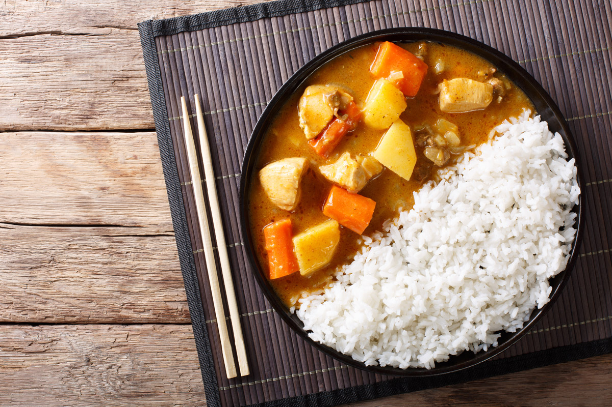
Японське карріГустий карі з овочами та м'ясом (часто з яловичиною або куркою), зазвичай подається з рисом і має ніжно-пряний смак.
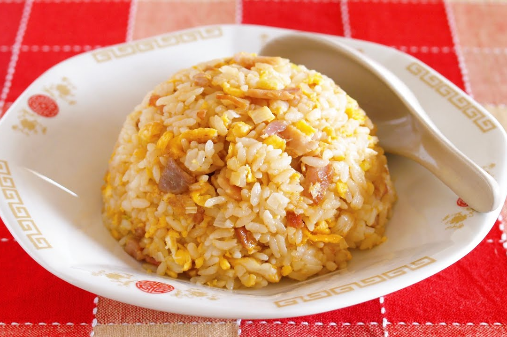
ЧаханЯпонська смажена рисова страва з овочами, яйцем і м’ясом (зазвичай свининою або креветками), приправлена соєвим соусом.
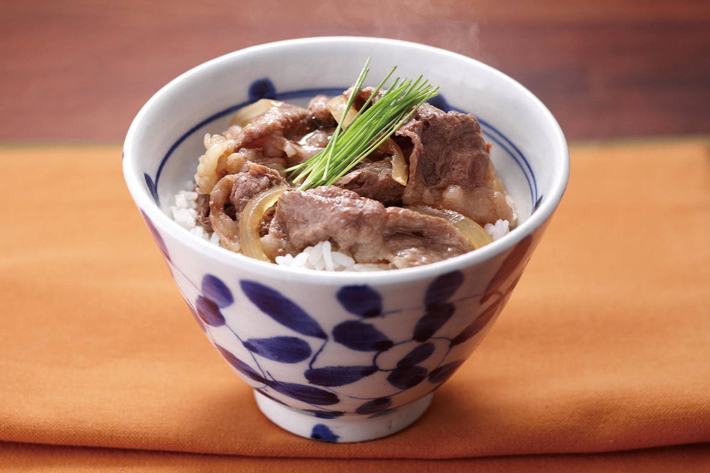
ҐюдонМиска з рисом, зверху якої викладають тушковану яловичину з цибулею в соєвому соусі, злегка солодкувату на смак.

КацудонМиска з рисом, на якій розміщують смажену свинячу котлету в клярі (тонкацу) з яйцем та цибулею в соусі.
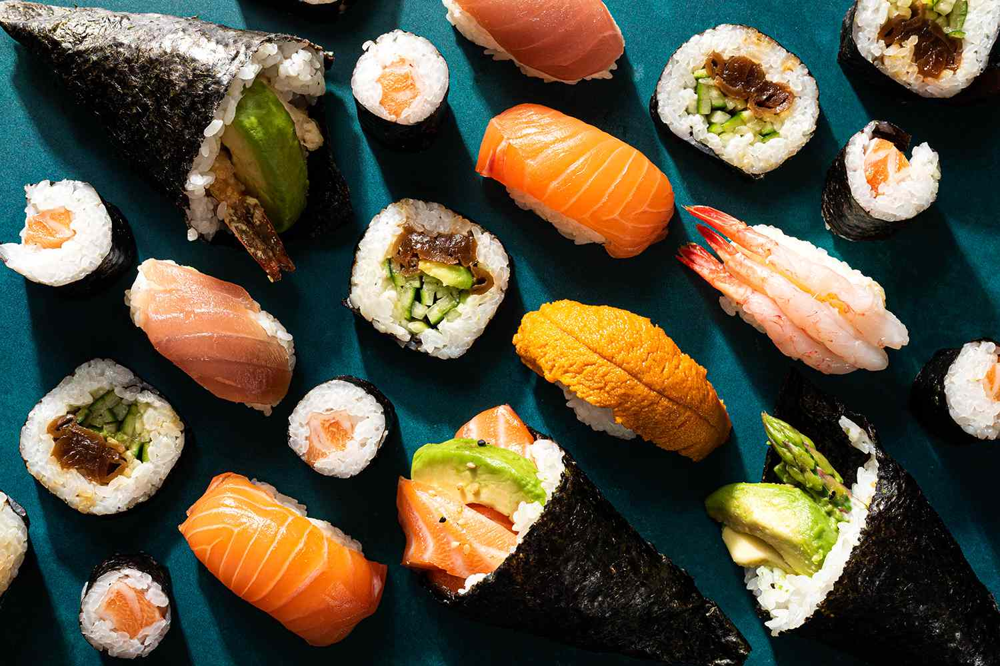
СушіСтрава з рису для суші, приправленого оцтом, та морепродуктів або овочів, що може подаватися в різних формах (макі, нігірі, сашимі).
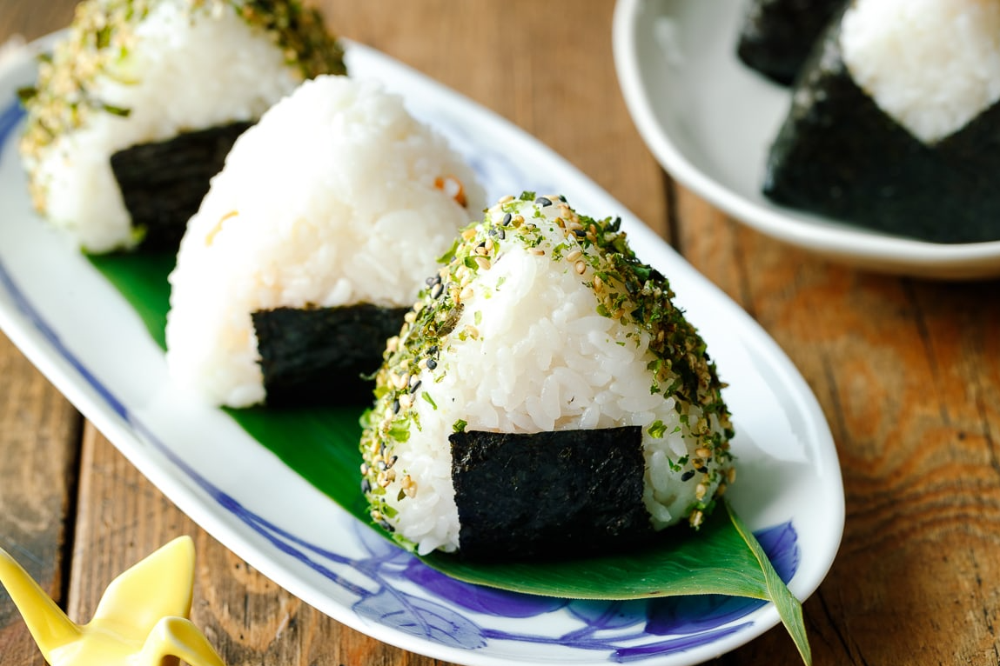
ОніґіріРисові кульки або трикутники, часто з начинкою (лосось, тунець, мариновані сливи) і загорнуті у водорості норі.
Омлет із рисомСтрава з обсмаженого рису, загорнутого в тонкий омлет, зазвичай прикрашена кетчупом, популярна як домашня їжа.
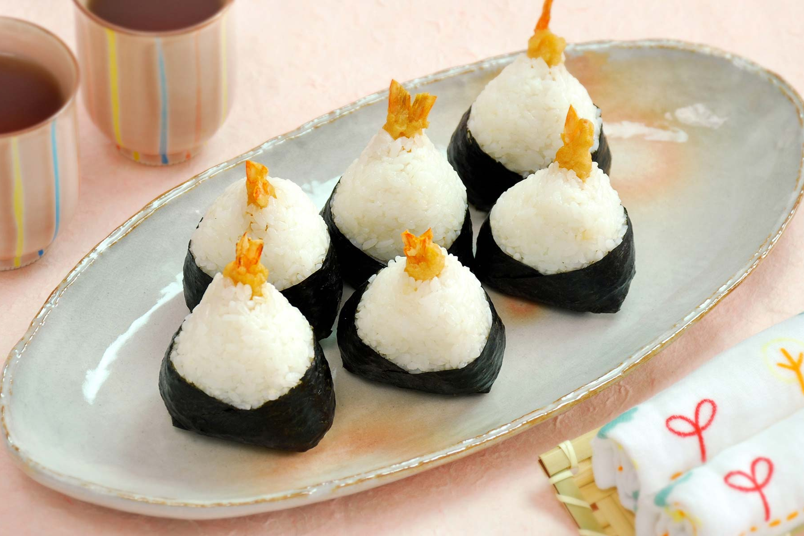
ТенмусуОніґірі з начинкою з темпури (смажених морепродуктів чи овочів), загорнуте у водорості.
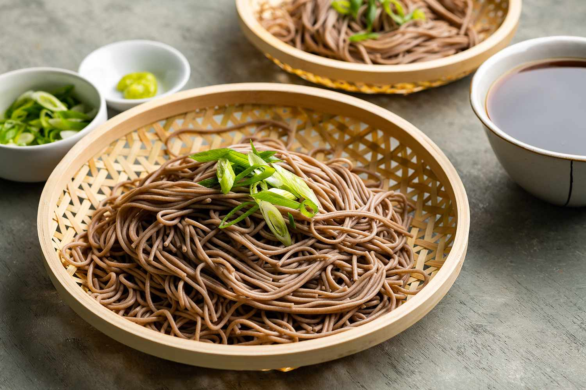
СобаСтрава з прозорої крохмальної локшини, обсмаженої з овочами, м'ясом та солодко-солоним соусом.
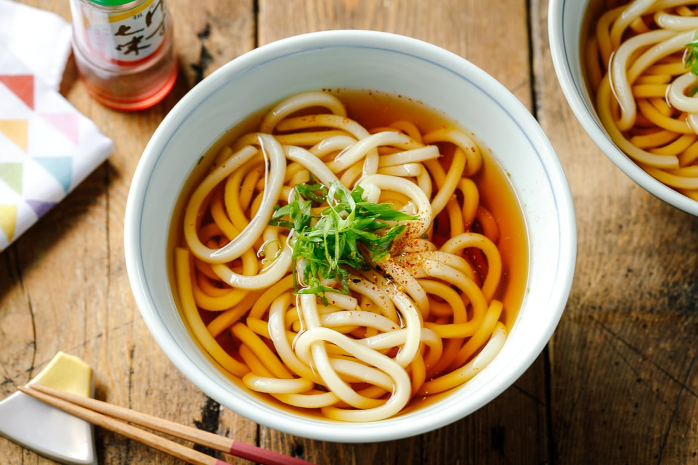
УдонТовста пшенична локшина, яка подається в гарячому супі або з соусом, часто з додаванням овочів і м'яса.
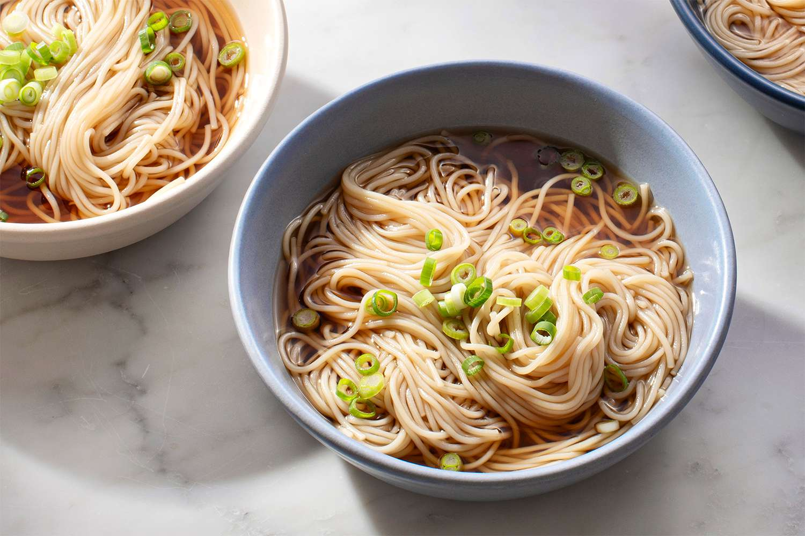
СоменТонка пшенична локшина, зазвичай подається холодною з соєвим соусом і бульйоном влітку.

РаменСтрава з пшеничною локшиною у бульйоні (свинячому, курячому, соєвому або місо), з м'ясом, яйцем і овочами.
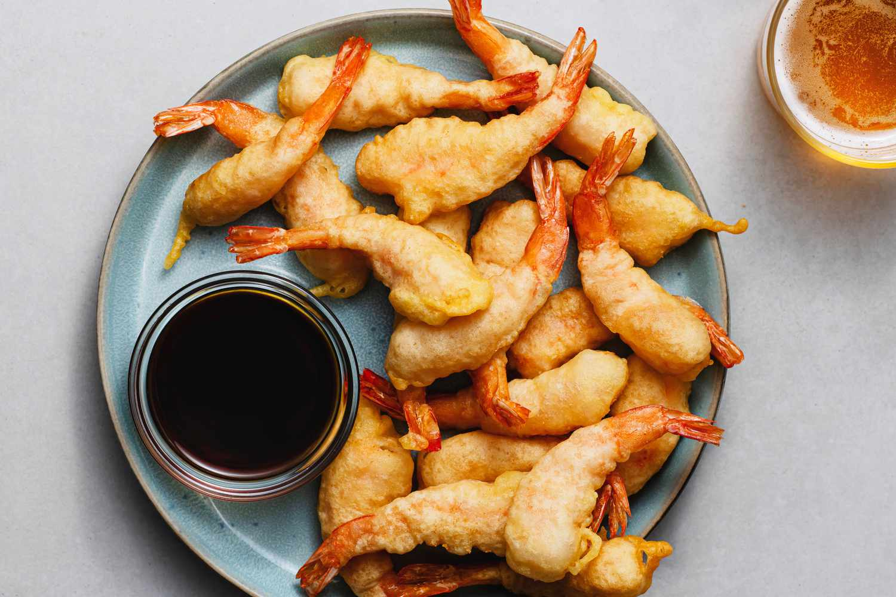
ТемпураСтрава з морепродуктів або овочів, обмочених у легкому клярі і обсмажених у фритюрі до хрусткої скоринки.

ТонкацуСмажена у фритюрі свиняча відбивна в паніровці, зазвичай подається з капустою і соусом.
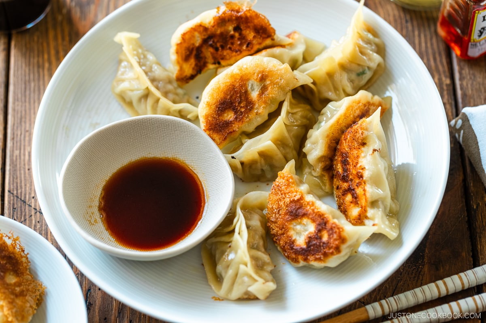
ҐьозаЯпонські пельмені, зазвичай з начинкою зі свинини, овочів і часнику, які смажаться або варяться на пару.
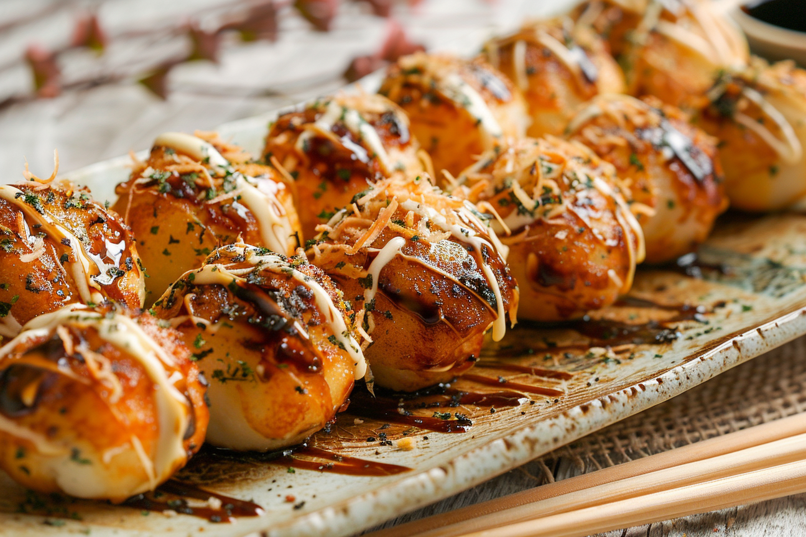
ТакоякіСмажені на спеціальній сковороді кульки з тістом, начинені шматочками восьминога, прикрашені соусом і пластівцями тунця.
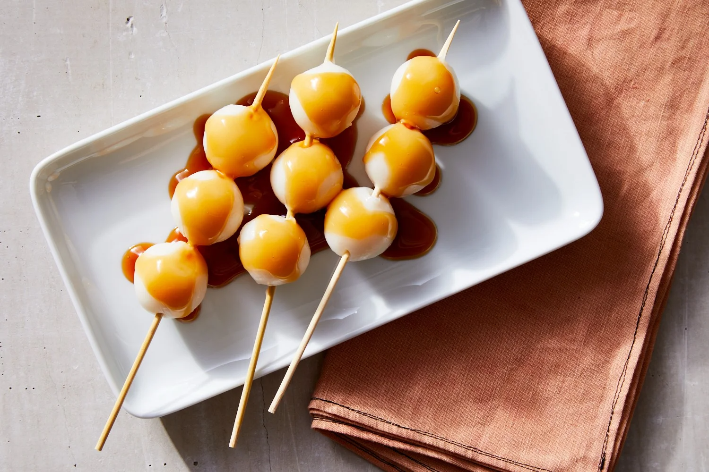
ДанґоЯпонські рисові кульки на паличці, які можуть бути підсолодженими і подаються з різними соусами або глазур'ю.

МочіМ'які клейкі рисові тістечка, зроблені з рисового борошна, можуть бути наповнені солодкою бобовою пастою або фруктами.
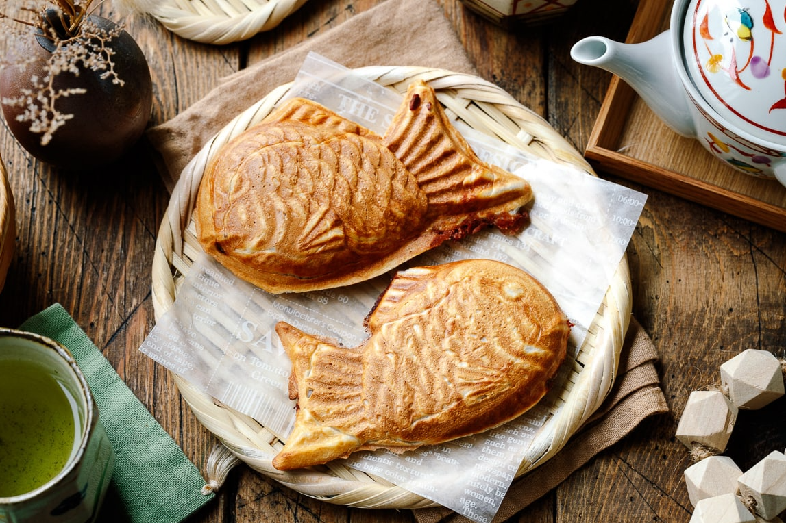
ТаякіЯпонські вафлі у формі риби, зазвичай з начинкою з солодкої бобової пасти, але можуть бути й інші начинки.
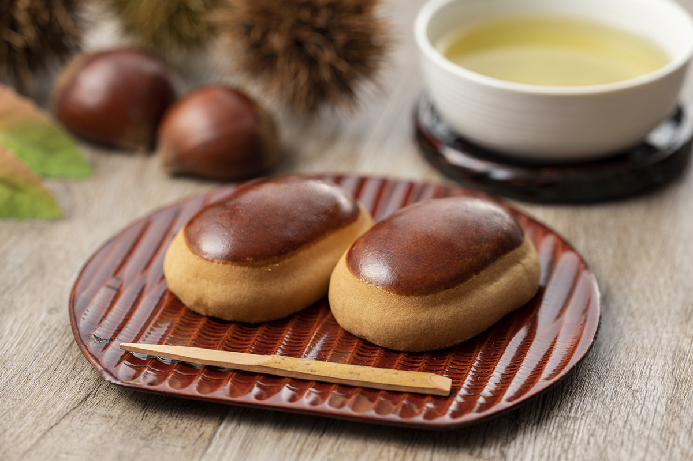
МанджюТрадиційна японська солодкість з парового тіста, наповнена солодкою пастою з червоних бобів або іншими інгредієнтами.